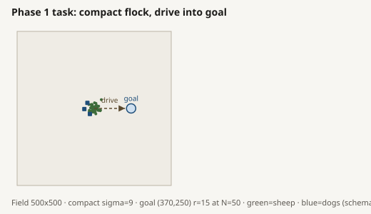
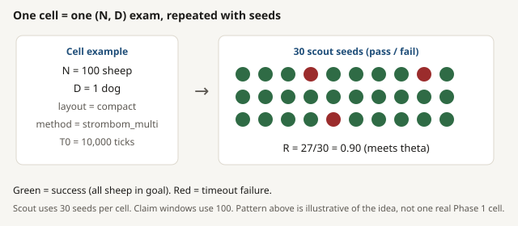
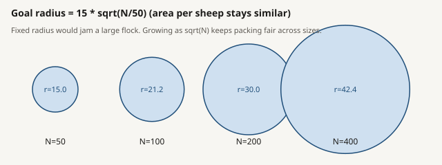
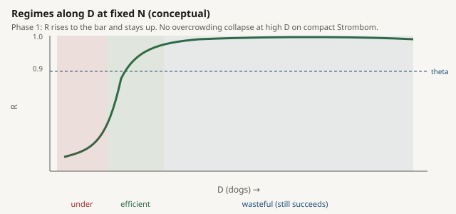
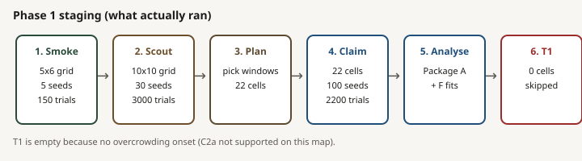
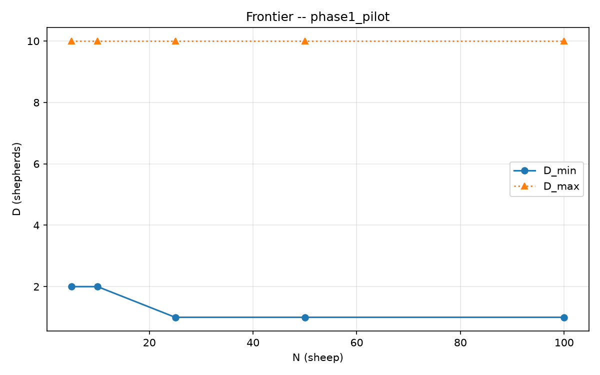
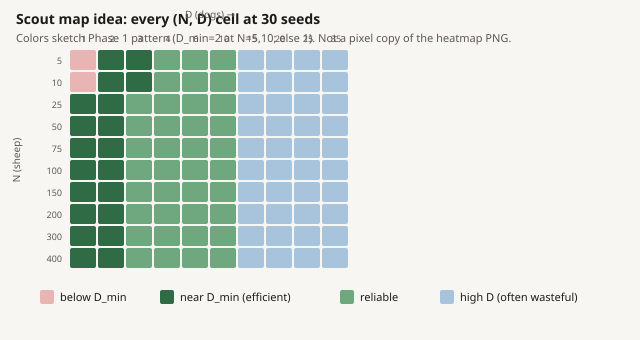
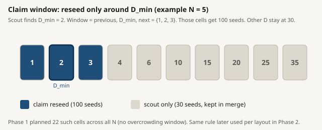
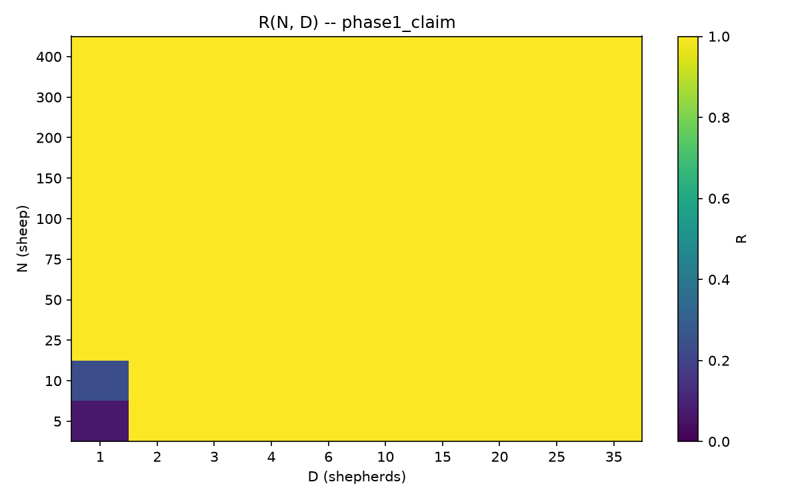
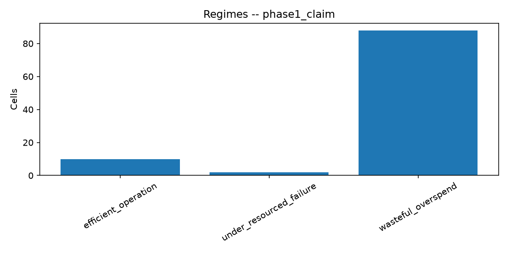

Phase 1 size map
Baseline herdability size map for HerdSim (protocol scaling_v2): how reliability R(N, D) changes with flock size N and dog count D on the drive-to-goal task. Read top to bottom: summary -> question -> design -> how we ran it -> results -> what it means.
SUMMARY At a glance
| Field | Value |
|---|---|
| Dog method / layout | strombom_multi / compact |
| Task | Drive the flock into a goal disk |
| Success rule | Every sheep is inside the goal disk before timeout |
| Arena / start | 500 x 500 field; flock starts at (250, 250) |
| Goal | Center (370, 250); radius 15 * sqrt(N / 50) |
| Flock sizes N | 5, 10, 25, 50, 75, 100, 150, 200, 300, 400 |
| Dog counts D | 1, 2, 3, 4, 6, 10, 15, 20, 25, 35 |
| Reliability threshold | R >= 0.90 |
| Time / sampling | T0 = 10,000 ticks; 30 scout seeds and 100 claim seeds on boundary cells |
| Extended time check | T1 = 20,000 ticks for overcrowding cells; none were found, so T1 was skipped |
| Cited dataset | Claim merge - 4540 trials, overall R = 0.963 |
Claim reasoning appears later in Claims. Full value rationale is in the Appendix.
QUESTION What Phase 1 asks
Research question (size map): as flock size N grows, how does the needed dog count D change for reliable herding (R >= 0.90), and do too many dogs start to hurt?
- D_min: smallest D with R >= 0.90
- Regimes: under-resourced / efficient / wasteful / overcrowding
- D_max: largest D still above the bar (here: grid ceiling 35, no collapse)
- Pilot: check that the simulation and analysis pipeline work.
- Scout: run the complete N x D map with 30 seeds per cell and write scout/trials.csv.
- Claim plan: read the Scout results and select the 22 cells around each candidate D_min. Clearly reliable or clearly weak cells are unlikely to change classification with more seeds; boundary cells need the extra precision.
- Claim reseed: run those 22 cells at 100 seeds. The other 78 cells keep their 30-seed Scout results.
- Merge and analyse: combine the Claim rows with the unchanged Scout rows, producing the 4,467-row merged map used for Package A.
- 2 under-resourced: only (5,1) and (10,1). Too few dogs: R stays far below 0.90 (0.07 and 0.24). The failure is on the low-D side, not a high-D collapse. That is why D_min is 2 for N = 5 and 10.
- 10 efficient: one cheapest reliable cell per flock size (the B* / D_min band). For N = 5 and 10 that is D = 2; for N >= 25 it is D = 1. Those are the operating points that meet reliability without paying a wasteful path penalty relative to D_min.
- 88 wasteful: almost the rest of the grid. Extra dogs still succeed (R = 1), but median path is at least ~20% above the efficient cell. So "more dogs" mostly means more travel, not more reliability. That is expected once D_min is already 1 or 2 and the D axis goes up to 35.
- 0 overcrowded: no D_overcrowd on this map. Reliability never collapses again at high D (within the tested grid). So C2a (overcrowding exists) is not supported here, and T1 / C2b stay untested rather than falsified.
- That is an observed pattern on compact + strombom_multi, not a proof of a mechanism.
- Possible stories (still unproven here): tiny flocks give weak collective response; one dog can push the whole small group into a bad loop; Collect/Drive switching behaves differently at small N.
- Phase 2 (structure) and later mechanism packages are where those stories get tested.
- Plain language: after D_min, do two consecutive D values both fall below 0.90?
- If yes -> C2a supported. If the whole map has no such onset -> C2a not supported / rejected on this map.
- This run: no D_overcrowd -> C2a not supported.
- C2a asks: "do extra dogs break success?"
- C2b asks next: "is that break only because time ran out, or does it still fail with more time?"
- Needs T1 sims on overcrowding cells only.
- This run: 0 overcrowding cells -> T1 skipped -> C2b not applicable (not "false").
- C1a: for at least one N, D_min differs by at least one D-grid step across initial layouts X0.
- C1b: a flock-state model predicts better than (N, D) alone (leave-one-N-out).
- Both need Phase 2 (compact / wide / split / outliers). Phase 1 only ran compact.
- C6a: a power law loses to a piecewise / per-layout fit on leave-one-N RMSE.
- C6b: slope of log D_min on log N is below 1 in a stated band.
- This run: Package F prefers piecewise, but treat as diagnostic until claim criteria are locked. Also D_min is mostly flat here, so slope claims need care.
- One method, one layout, one task. Compact + strombom_multi + drive-to-goal only. Not a universal farm law and not a statement about other methods or structures.
- No overcrowding branch. With 0 D_overcrowd cells, T1 (20,000 ticks) did not run, so C2b is untested here (not "false").
- Merge is mixed-seed by design. Cells with 100 claim seeds use those 100 only; the other 78 cells keep the scout 30 seeds. Do not stack 30+100 on the same cell.
- (5,1) is still far below threshold. With the full 100 claim seeds, R = 0.07 (7/100), so D_min remains 2; the cell is weak, not under-sampled.
- Scaling shape is diagnostic. Package F leans piecewise and D_min is mostly flat, so C6 slope claims need locked criteria before promotion.
- Skip T1 unless overcrowding rules are redefined (empty by design this round).
- Phase 2: same N, change initial structure (wide / split / outliers) and see if D_min moves.
- Later phases: other herding methods (transfer), information vs dog count, early-warning signals.
- Optional: lock C1 / C2a wording in the claims tracker after review.
- Floor N = 5 (not 1 or 20): below 5 there is little collective sheep-sheep interaction; 5 and 10 keep a small-flock regime.
- Denser around 75 and 150: the draft paper suggested a change near N=100 (one dog may stop being enough). Extra points there give a chance to see that transition if it appears.
- 300 and 400: give the large-N slope more than one step.
- Skip 250 and 350: each extra N costs a full dog sweep on scout (~300 trials at 30 seeds). Ten N values are the locked science/budget compromise.
- Not every integer N: we need small / edge / large regimes, not a continuous farm census.
- Phase 1 asks about a small shepherd team guiding a larger flock (indirect control), not an army of dogs.
- D=1..4 asks "how few dogs are enough?". D=6..35 asks "does adding many more still help, waste path, or start to hurt?".
- D > 35 would change the question to mass controllers / coverage / dog-swarm interference on the field. That is a different study.
- Technically D=50 or 100 still runs; it is out of scope for this size-map story, not a physics ban.
Phase 1 uses one method and one layout only. Structure (other layouts) and method transfer come later.
DESIGN What we froze and why
Every value below is locked in the shared protocol; Phase 1 does not tune them after seeing results. One-line reasons here; the full rationale for each value lives in the Appendix.
Key ideas before the numbers
| Idea | Plain meaning |
|---|---|
| One trial | One simulated attempt: pass if the whole flock is in the goal disk before the time limit. |
| Cell (N, D) | One fixed exam setup, e.g. 10 sheep + 1 dog. We repeat it with different random seeds. |
| R (reliability) | Pass rate of that cell: passes / trials. The science bar is R >= 0.90. |
| D_min | Smallest D with R >= 0.90 for a given N (under the frozen protocol). |
| Overcrowding | After D_min, two consecutive grid D values both fall below 0.90: adding dogs hurts success. |
| Claims (C...) | Scientific statements with pass/fail rules. Phase 1 focuses on C2a/C2b; C1 needs Phase 2; C6 is diagnostic. Details below. |
Arena, one cell, and goal radius (pictures)
Drawn from the real compact X0 generator and protocol parameters (N = 50, seed 2026). Green = sheep. Blue squares = dogs (schematic). Blue disk = goal.




SVG files: assets/schematics/. Why compact sigma = 9, spread = 30, and arena numbers: see Compact layout numbers in the appendix.
Frozen choices (short map)
| Choice | Value | One-line why |
|---|---|---|
| N grid | 5,10,25,50,75,100,150,200,300,400 | Small / mid / large bands; denser near 100; skip 250 and 350 to save a full D sweep each. |
| D grid | 1,2,3,4,6,10,15,20,25,35 | Fine where D_min usually sits; coarse at high D; cap at "few shepherds". |
| Field | 500 x 500 | Fits wide and large-N starts; GUI 150 is too small; 1000 is mostly empty. |
| Goal | center (370,250), radius 15*sqrt(N/50) | Fixed drive length 120; goal area scales so packing does not jam by accident. |
| Theta | 0.90 | Same "reliable" bar as the draft paper. |
| T0 / T1 | 10,000 / 20,000 | Timeout = loss of control; T1 only if overcrowding cells exist. |
| Seeds | 30 then 100 | Cheap full map, then precise seeds on the boundary only. |
| Method / layout | strombom_multi / compact | Baseline size map first; other methods and layouts come later. |
Why each value is set the way it is (N grid density, D ceiling 35, arena 500x500, goal radius, theta, time budget, seeds) is spelled out in the Appendix: why these values.
How a cell is built from N, D, and seeds
RUN How we ran it

This is more efficient than running all 100 cells at 100 seeds, which would require about 10,000 trials. Each stage below shows its scope, result, grid picture, and Package A figures. Click a figure for full size.
How to read the graphs: the heatmap shows reliability R for each flock size N and dog count D; the frontier graph shows the smallest reliable dog count D_min for each N; the regime graph counts cells classified as under-resourced, efficient, wasteful, or overcrowded. Each stage below explains what its graphs show for that run.
1. Pilot (smoke): 5 x 6 grid, 5 seeds/cell -> 150 trials (~43 s)
Purpose: check the pipeline only (not claim-grade). N = {5,10,25,50,100}, D = {1,2,3,4,6,10}. Overall R = 0.947.
Inside the weak cells (each dot = one seed):
Pilot result: the heatmap and frontier show that one dog is weak for N = 5 and N = 10, while two dogs pass in this small smoke test. This stage checks the pipeline; it is not claim-grade evidence.
Click image to view full size

Click image to view full size


2. Scout: full 10 x 10, 30 seeds/cell -> 3000 trials (~73 min)
Purpose: cheap full map used later to choose the claim window. Writes scout/trials.csv. Overall R = 0.983. Still only (5,1) and (10,1) stay weak.
Sketch for (5,1) at 30 seeds (1 pass / 29 fail -> R = 0.033):
Sketch for (10,1) at 30 seeds (~8 pass / 22 fail -> R ~ 0.27):
Scout result: the full map repeats the same pattern: only (N = 5, D = 1) and (N = 10, D = 1) remain weak. The scout frontier is used to select the 22 boundary cells for claim reseeding; the regime graph suggests that high-D cells pass but may be wasteful.
Click image to view full size

Click image to view full size

Click image to view full size

3. Claim: plan from scout file, then reseed 22 cells x 100 -> 2200 claim rows (~57.5 min)


Plan (no new sims): read scout R, keep D_min +/- neighbors. N=5 and 10 -> D={1,2,3}; eight larger N -> D={1,2}. Total 3+3+16 = 22 cells.
Reseed: 100 seeds on each of the 22 cells (2200 trials). Every selected cell has 100 claim rows in the analysis CSV. (5,1) and (10,1) stay far below 0.90. Merge with the other 78 scout cells gives the cited Package A map (4540 rows, overall R ~ 0.963).
| Claim cell group | Cells | Seeds per cell | Total rows |
|---|---|---|---|
| Selected boundary cells | 22 | 100 | 2,200 |
Sketch for analysis rows for (5,1): 100 rows (7 pass / 93 fail -> R = 0.07):
Sketch for analysis rows for (10,1): 100 rows (24 pass / 76 fail -> R = 0.24):
The remaining 20 selected cells each have 100 analysis rows and passed all runs.
Claim result: after combining the scout map with the boundary reseed, the heatmap shows D_min = 2 for N = 5 and 10, and D_min = 1 for N >= 25. The frontier shows no overcrowding and D_max remains at the grid ceiling of 35. The regime graph counts 2 under-resourced, 10 efficient, and 88 wasteful cells, with 0 overcrowded cells.
Rows = N (5 top to 400 bottom). Columns = D (1 left to 35 right).
Click image to view full size


Click image to view full size

Click image to view full size


4. T1 long budget: 0 cells (skipped)
T1 would re-run overcrowding cells at 20,000 ticks. None found after claim merge, so no T1 sims ran. That matches C2a not being supported on this map.
RESULTS Results
Stage figures live in How we ran it above. Full frontier / R tables and CSV files are under Raw data.
| Stage | Scope | Trials | Overall R | Cite science? |
|---|---|---|---|---|
| Pilot | 30 cells x 5 | 150 | 0.947 | No |
| Scout | 100 cells x 30 | 3000 | 0.983 | No (planning) |
| Claim window | 22 cells x 100 seeds | 2200 claim rows on disk | see merge | Yes (with merge) |
| Merged map | 100 cells | 4540 rows | 0.963 | Yes |
| T1 | 0 overcrowding cells | 0 | - | N/A |
Frontier and weak cells (claim merge)
| N | D_min | D_overcrowd | D_max |
|---|---|---|---|
| 5 | 2 | none | 35 |
| 10 | 2 | none | 35 |
| 25 ... 400 | 1 | none | 35 |
| Cell | Scout R (30) | Merged R | Meets 0.90? |
|---|---|---|---|
| 5 sheep, 1 dog | 0.033 | 0.07 (100 claim seeds) | No |
| 10 sheep, 1 dog | 0.267 | 0.24 (100 claim seeds) | No |
| Same N, 2 dogs | 1 | 1 | Yes |
| All other cells | 1 | 1 | Yes |
Regimes on 100 merged cells
| Regime | Cells | Meaning |
|---|---|---|
| Under-resourced | 2 | Fail: too few dogs |
| Efficient | 10 | Pass at cheapest reliable D |
| Wasteful | 88 | Pass, but extra dogs lengthen path |
| Overcrowding | 0 | Not observed |
Those four counts label every (N, D) cell on the 100-cell size map (theta = 0.90; effort = median shepherd path). Here is what this Phase 1 map actually says.
Bottom line: for compact + strombom_multi + drive-to-goal, the size map is thin failure at the smallest flocks with one dog, then a flat D_min = 1 frontier, and a large wasteful band. It does not say that more dogs help once you are past D_min, and it does not say dogs interfere into failure at high D on this protocol.
Failures on the merge are mostly oscillation (111) or stuck (58); wins are 4371 / 4540. Across 1,000 bootstrap resamples, D_min stayed on the same tested D value for every N.
RESULTS Why D_min is 2 at small N, then 1
On this map, N=5 and N=10 fail at D=1 (oscillation / stuck until timeout) and succeed at D=2. From N=25 upward, D=1 already has R=1. So D_min drops to 1 and stays flat.
INTERPRETATION What it means
Vs the draft paper story: that draft suggested rising D_min with N and some overcrowding. This Phase 1 baseline shows a flat D_min (1 for large N) and no overcrowding under compact + strombom_multi + the frozen protocol.
Claim-by-claim reasoning follows next in Claims.
CLAIMS Claims C1 / C2 / C6 explained
In the plan, each "C..." is a scientific claim with a clear pass/fail rule. Phase 1 mainly speaks to C2a / C2b (overcrowding on the size map) and gives diagnostic material for C6. C1a / C1b need Phase 2 structure runs.
C2a: does overcrowding appear?
C2b: if overcrowding exists, does a longer budget still fail?
| C2a | C2b | |
|---|---|---|
| Asks | Overcrowding on the T0 map? | Still bad at T1=20,000? |
| Needs | R(N,D) at 10,000 ticks | Reseed overcrowding cells at 20,000 |
| This map | Not supported | Not applicable |
C1a / C1b: structure (not Phase 1)
C6: scaling shape of D_min(N)
Stance summary on this Phase 1 map
| Claim | Stance | Why |
|---|---|---|
| C2a | Not supported / rejected | No overcrowding onset |
| C2b | Not applicable | No T1 cells |
| C1a / C1b | Out of scope | Need Phase 2 layouts |
| C6a / C6b | Open / diagnostic | Package F piecewise preferred; criteria not locked |
LIMITS What this run does not support
NEXT Next steps
APPENDIX Why these values (full rationale)
Reference material. The narrative above stands on its own; this section records why each frozen value is set the way it is, so future phases inherit the same reasoning.
Reproduce this run (make targets)
Host gwen (Ultra 7 165H, 61 GiB), WORKERS=16, CPU governor performance. Master seed 2026.
N grid: why these sizes (and this density)
On this baseline run, D_min is already flat (=1 from N>=25), so the draft "transition near 100" does not appear. The N grid is still correct design: it was chosen so that transition could be seen if it existed.
D grid: fine low, coarse high, ceiling 35
Low band (1,2,3,4): D_min usually sits here, so we need step size 1 to tell 1 vs 2 vs 3 apart. High band (6,10,15,20,25,35): the question is whether a large increase helps or hurts, so coarser steps are enough.
Arena 500 x 500 and the goal
| Setting | Value | Why |
|---|---|---|
| Field size | 500 x 500 | GUI field 150 cannot hold a wide start (~3-sigma ~180) or large-N outliers (~174). Field 400 is still tight (~20 short on a wide draw). Field 500 leaves ~70 margin. Field 1000 mostly adds empty space. Square field avoids crushing split clusters into a short side. |
| Flock start | (250, 250) center | Symmetric top/bottom margins. |
| Goal center | (370, 250) | Drive length 120 to the right; that length stays fixed when N changes. |
| Drive length | 120 | At speed 1, a straight crossing is ~120 ticks. At N=400 the near goal edge is ~78 from the flock (outside a compact cloud). Length 80 sits inside a wide cloud; length 200 pushes the far goal edge into the wall. |
| Goal radius | 15 * sqrt(N/50) | At N=50 this is radius 15 (app default). Fixed radius 8 jams; radius 30 is too easy (fake low D_min). Scaling with sqrt(N) keeps area per sheep roughly constant so large N does not jam by packing alone. |
Compact layout numbers (why these, not others)
Phase 1 runs compact only. Wide / split / outlier_rich are Phase 2; their numbers are locked here so later phases share the same ruler. Source: layout contract and “Why these values” in the plan.
| Choice | Why | Not chosen |
|---|---|---|
| Compact only in Phase 1 | The size-map question needs one fixed start shape so changes come from N and D only. | Running all four layouts here mixes “larger flock” with “distorted start”. That is RQ1 (Phase 2). |
| spread = 30 | Shared length scale. Compact uses 0.3 x 30; wide (Phase 2) uses 2.0 x 30 on the same scale. | A Phase-1-only spread would break the frozen layout contract. |
| compact sigma = 0.3 x 30 = 9 | Matches packed radius about 8 at N = 50: one already-glued, normal flock. Baseline reference for the whole program. | Sigma about 3: almost a point. Sigma about 60: duplicates wide and no longer isolates size. |
| measurement radius = 5 | Compact neighbors sit near 2 to 4, so radius 5 joins them into one component. Phase 2 split gaps are at least 10, so radius 5 does not bridge those clusters. | Radius 2 tears a slightly loose compact flock. Radius 15 bridges the split gap. |
Full four-layout parameter tables (including N ≥ 12 → three clusters, gap ≥ 10, outlier 20%) live in the Phase 2 report section “Why these layout numbers”.
Theta, time budget, and seeds
| Setting | Value | Why |
|---|---|---|
| Theta | 0.90 | Reliable band, same cut as the draft. 0.50 is reported but not the D_min bar. 0.99 at 100 seeds would mark stable cells as short. |
| T0 | 10,000 ticks | ~80 straight crossings of length 120; timeout means loss of control. Scenario default 3,000 mixes slow successes into failures. |
| T1 | 20,000 ticks | Only on overcrowding cells: separates "needed more time" from "too many dogs really hurt". |
| Scout / claim seeds | 30 / 100 | At R=0.90, 30 seeds separate broken from solid cells; 100 tightens the boundary. Ten seeds flip the window too easily. |
| Bootstrap | 1,000 resamples | Interval on D_min from seeds already run. Here D_min stayed unchanged across 1,000 resamples for every N. |
APPENDIX Raw data (check yourself)
Stage plots are under How we ran it (not repeated here). Summary tables and CSV files are below so you can check numbers without the git repo.
Claim-merge frontier
| N | D_min | D_overcrowd | D_max | B* D | B* median effort |
|---|---|---|---|---|---|
| 5 | 2 | none | 35 | 2 | 335.1 |
| 10 | 2 | none | 35 | 2 | 328.8 |
| 25 | 1 | none | 35 | 1 | 163.5 |
| 50 | 1 | none | 35 | 1 | 157.5 |
| 75 | 1 | none | 35 | 1 | 155.9 |
| 100 | 1 | none | 35 | 1 | 161.4 |
| 150 | 1 | none | 35 | 1 | 153.0 |
| 200 | 1 | none | 35 | 1 | 144.2 |
| 300 | 1 | none | 35 | 1 | 130.8 |
| 400 | 1 | none | 35 | 1 | 119.8 |
File: assets/claim/packages/a/frontier.csv
Claim-merge reliability R(N, D)
Pink cells: R < 0.90. File: assets/claim/packages/a/reliability.csv
| N \ D | 1 | 2 | 3 | 4 | 6 | 10 | 15 | 20 | 25 | 35 |
|---|---|---|---|---|---|---|---|---|---|---|
| 5 | 0.07 | 1 | 1 | 1 | 1 | 1 | 1 | 1 | 1 | 1 |
| 10 | 0.24 | 1 | 1 | 1 | 1 | 1 | 1 | 1 | 1 | 1 |
| 25 | 1 | 1 | 1 | 1 | 1 | 1 | 1 | 1 | 1 | 1 |
| 50 | 1 | 1 | 1 | 1 | 1 | 1 | 1 | 1 | 1 | 1 |
| 75 | 1 | 1 | 1 | 1 | 1 | 1 | 1 | 1 | 1 | 1 |
| 100 | 1 | 1 | 1 | 1 | 1 | 1 | 1 | 1 | 1 | 1 |
| 150 | 1 | 1 | 1 | 1 | 1 | 1 | 1 | 1 | 1 | 1 |
| 200 | 1 | 1 | 1 | 1 | 1 | 1 | 1 | 1 | 1 | 1 |
| 300 | 1 | 1 | 1 | 1 | 1 | 1 | 1 | 1 | 1 | 1 |
| 400 | 1 | 1 | 1 | 1 | 1 | 1 | 1 | 1 | 1 | 1 |
Files included in this package
| File | What it is |
|---|---|
| assets/claim/packages/a/boundary_cells.csv | 22 claim-window cells + scout R |
| assets/claim/packages/a/frontier.csv | D_min / D_max / B* by N |
| assets/claim/packages/a/reliability.csv | R for every (N, D) on the merged map |
| assets/claim/packages/a/regimes.csv | Regime label per cell |
| assets/claim/packages/a/dmin_bootstrap.csv | Bootstrap CI on D_min |
| assets/claim/merged_trials.csv | Raw merged trial log (4540 rows; overall R = 0.963) |
| assets/scout/trials.csv | Raw scout trial log (3000 rows; overall R = 0.983) |
| assets/scout/packages/a/reliability.csv | Scout R(N, D) |
| assets/pilot/trials.csv | Raw pilot trial log (150 rows) |
| assets/pilot/packages/a/reliability.csv | Pilot R(N, D) |
| assets/t1/REPORT.md | T1 empty by design |